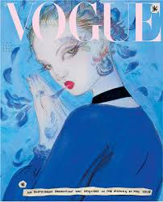

Back in January of 2020, Vogue had revealed that all the covers for that month would be drawn by artists. Among them was Yoshitaka Amano. The challenge was to display clothes without having any models.
"No photoshoot production was required in the making of this issue."
"A mixture of magic, Japanese, and art nouveau. His fantastical style evokes magic and beauty in a dream-like state."